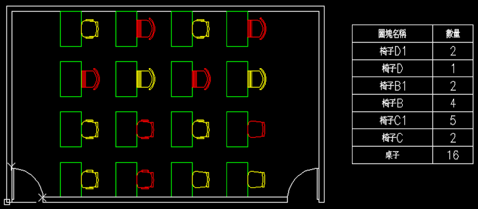

此篇延續上篇主題：AutoCAD顧問外掛程式 - 圖塊應用工具 (上)
很多使用者知道如何「製作圖塊」，但是您可能不知道「進階製作圖塊」，一般在作圖塊的「修改」或「置換」非常費時，常常需要「分解圖塊」，再來重新定義「圖塊」，有時還須透過不同的圖檔交換「圖塊物件」，預設的「圖塊工具」在工作效率上幫助很有限。

■雖然大家了解使用「圖塊」時機，但是一定覺得使用預設的圖塊工具「卡卡的」，總覺得說不上來感覺...
現在用戶可以搭配「圖塊外掛工具」，讓你的工作效率獲得進一步的提升。
這裡先介紹範例使用「圖塊應用II」工具列：
https://www.autocad-tw.com/t14820-topic
※使用說明※
本篇說明如何快速製作圖塊，立即完成工作中「圖塊的製作」，以及「定義或變更圖塊顏色」。
用戶還可根據圖塊「插入點」作不同變化，如：變更基準點或原始插入點等等。
AutoCAD顧問外掛程式 圖塊應用工具3
接著第二階段可以有效利用圖面中「既有圖塊」作變化，也就是說不用重複製作圖塊、命名及指定基準點（插入點）等步驟，透過此工具可快速「建立相同圖塊複本」、「更改選取圖塊物件名稱」、「置換套用至其他目標圖塊物件」及「刪除或計算所選之圖塊物件」。
AutoCAD顧問外掛程式 圖塊應用工具4
最後說明「圖塊應用」工具和「圖塊應用II」工具組合應用，透過「記憶圖塊組」儲存桌椅配置，再來可供插入其他圖面，若要開啟修改「記憶圖塊組」，使用者要記得輸入mslide指令，更新儲存「幻燈片」。
接著在目標圖面即可使用「圖塊刪除」工具，快速幫使用者把「桌子」圖塊刪除，而且自動幫您purge清除「桌子」圖塊，這樣及可以呼叫「記憶圖塊」到圖面中了～
AutoCAD顧問外掛程式 圖塊應用工具5
「圖塊II工具」的應用可以有很多組合搭配，大家可以多試試找尋出最理想的方式！
看完之後別忘投下您寶貴的一票，完成投票可以下載範例影片喔！
「投票」AutoCAD顧問 - ACADAdviser外掛程式（點我）